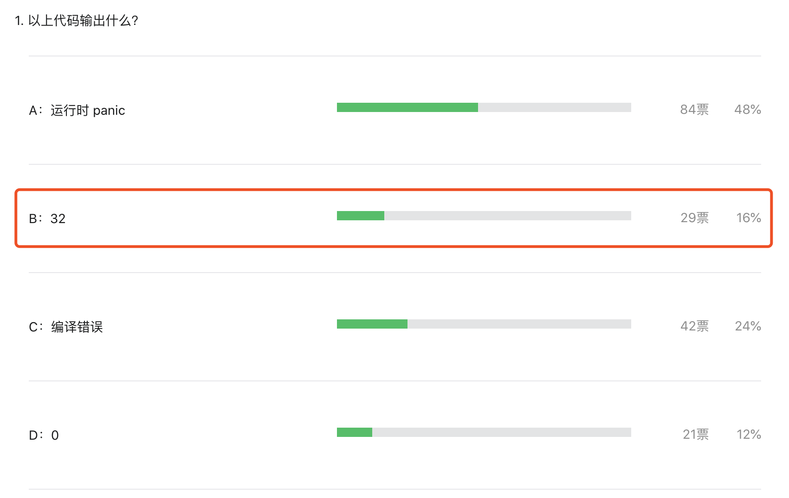

一道关于 len 函数的诡异 Go 面试题解析
大家好，我是 polarisxu。
在 Go语言爱好者周刊第 104 期有一道题目，以下代码输出什么：
package main
func main() {
var x *struct {
s [][32]byte
}
println(len(x.s[99]))
}
答题结果如下：

正确率只有 16%。
本文就讲解下为什么结果是 32。
01 解析题目
先剖析下这段代码，x 变量：
var x *struct {
s [][32]byte
}
注意这里不是定义一个结构体类型，而是定义一个结构体类型指针变量，即 x 是一个指针，指针类型是一个匿名结构体。很显然，x 的值是 nil，因为没有初始化，可以打印证实这一点。
package main
import "fmt"
func main() {
var x *struct {
s [][32]byte
}
fmt.Printf("x.Type = %T; x.Value= %v\n", x, x)
}
输出：
x.Type = *struct { s [][32]uint8 }; x.Value= <nil>
这也是为什么 48% 的人选择 A （panic） 的原因，毕竟 x 是 nil，panic 很自然的。比如这样就会 panic：
println(x.s)
// panic: runtime error: invalid memory address or nil pointer dereference
相应的，fmt.Println(x.s[99]) 也会 panic。但为什么 len(x.s[99]) 就不 panic 了呢？所以得从 len 入手一探究竟。
02 len 详解
len 函数是一个内置类型，什么意思？就是由编译器实现的。它的参数可以接收多种类型，有泛型的味道。
func len(v Type) int
关于它的说明，标准库文档有说明：
内建函数 len 返回 v 的长度，这取决于具体类型：
- 数组：v 中元素的数量
- 数组指针：*v 中元素的数量（v 为 nil 时 panic）
- 切片、map：v 中元素的数量；若 v 为nil，len(v) 即为零
- 字符串：v 中字节的数量
- 通道：通道缓存中队列（未读取）元素的数量；若 v 为 nil，len(v) 即为零
光这个解释，还不够全面，len 函数还有其他一些特殊的点。这要看 Go 语言规范。
在规范中，有一节是关于 len 和 cap 的 。有如下几个要点：
- 返回结果总是 int；
- 返回结果有可能是常量；
- 有时对函数参数不求值，即编译期确定返回值；
2、3 点解释下。（规范中有说明）
如果 len 或 cap 的函数参数 v 是字符串常量，则返回值是一个常量。
如果 v 的类型是数组或指向数组的指针，且表达式 v 没有包含 channel 接收或（非常量）函数调用，则返回值也是一个常量。这种情况下，不会对 v 进行求值（即编译期就能确定）。否则返回值不是常量，且会对 v 进行求值（即得运行时确定）。
这一点是这道题的关键。
首先，x.s[99] 的类型是 [32]byte，它是一个数组，且表达式 x.s[99] 没有包含 channel 接收也不是函数调用，因此不会对 x.s[99] 进行求值，不求值自然不会 panic（想不明白？可以想成没有解引用操作）。也就是说，编译器能够在编译阶段分析出 x.s[99] 的类型是 [32]byte，且不需要对 x.s[99] 求值，因此直接返回数组的长度，即 32。
03 其他类似情况
类似这样不求值的情况还有没有？还真有。比如下面的代码：
var testdata *struct {
a *[7]int
}
for i, _ := range testdata.a {
fmt.Println(i)
}
同样不会 panic，原理和上面的类似，在 Go 语言规范有说明 。
“range” 子句中右侧的表达式被称为 range 表达式 ，它可以是数组、数组的指针、切片、字符串、map或是允许接收操作 的 channel。range 表达式会在开始此循环前被求值一次，但有一个例外：当存在最多一个迭代变量且 len(x) 是常量时，range 表达式是不被求值的。
所以上面代码中 testdata.a 不会被求值，因为 len(testdata.a) 是常量。
但如果改为这样：
var testdata *struct {
a *[7]int
}
for i, j := range testdata.a {
fmt.Println(i, j)
}
就会 panic。
04 总结
通过这么一道「诡异」的面试题，希望你能够对 len 有更深的理解，也希望你能够重视 Go 语言规范，多留意一些细节，同时学会如何寻找问题的答案。